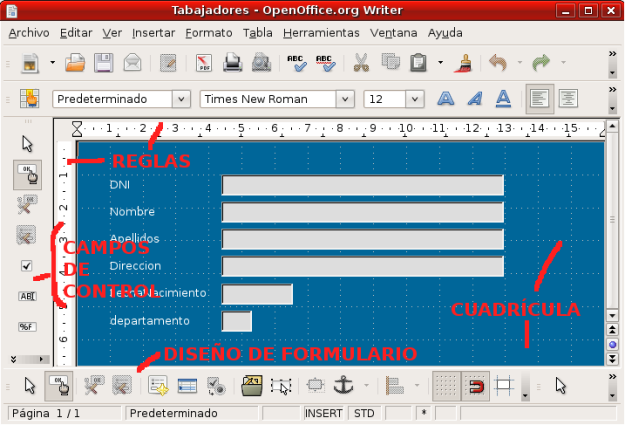
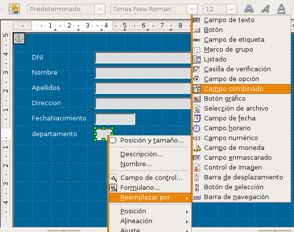

Después de realizar nuestras primeras incursiones en los formularios
utilizando para ellos el sencillo formulario que creamos con el
Asistente para formularios, llega ahora el momento de profundizar más
en los mismos y comenzar a modificarlos para añadir más campos, cambiar
el fondo, la forma, la posición de los campos, el estilo de los
caracteres que se muestran y un sinfín de características más.
Bases de Datos
5.3. Editar un Formulario
Editar un Formulario
Para editar cualquier
formulario que tengamos ya creado:
- Lo primero que debemos hacer es abrir dicho formulario en modo diseño y para ello nos vamos a la ventana de la base de datos y comprobamos que en el panel de tareas Base de datos está seleccionada la opción Formularios.
- A continuación comprobamos que en el panel de tareas Formularios está seleccionado el formulario que queremos editar.
- Hacemos clic sobre el botón Editar de la barra de herramientas (ver siguiente figura).
También podemos editar un formulario seleccionando su nombre en la lista de formularios y haciendo clic sobre él con el botón derecho, con ello aparecerá un menú contextual en el que deberemos elegir la opción Editar.
A través del botón de edición o de la opción del menú contextual se abrirá la ventana del formulario seleccionado en formato edición en el que veremos que se muestra los correspondientes elementos de edición como son la regla y la cuadrícula y ya aparece activa la barra de herramientas Diseño de formulario como muestra la figura siguiente:

Ahora, nos encontramos con una ventana de OpenOffice Writer, pero al estar en edición contamos con toda la potencia de sus herramientas y sus menús lo que nos permitirá realizar cualquier tipo de tareas de las que llevamos a cabo en un procesador de textos.
Dentro de nuestro formulario podremos cambiar la posición de los campos y sus etiquetas, modificar las dimensiones de cualquier campo, modificar los atributos tanto del texto de las etiquetas como del campo, etc.
Crear etiquetas en el formulario
Las etiquetas que introducimos en un formulario son simplemente texto que no tiene nada que ver con el contenido de los registros. Las etiquetas podemos utilizarlas para colocar títulos, subtítulos, nombres de campos, nombres de secciones o incluso texto explicativo para realizar todas las aclaraciones que sean necesarias.
Para esta y otras tareas utilizaremos la barra de herramientas Diseño de formularios que vemos con sus correspondientes indicaciones en la figura siguiente.
Como estamos tratando de insertar una etiqueta dentro de nuestro formulario debemos utilizar la barra de herramientas Campos de control de formulario que aparece en la barra lateral izquierda. Los botones de dicha barra se muestran en la figura siguiente con sus correspondientes indicaciones.
Para crear una etiqueta debemos hacer lo siguiente:
- Hacer clic sobre el botón Campo de etiqueta y comprobamos que dicho botón aparece con un recuadro alrededor.
- Llevamos el cursor al formulario, justo al lugar donde queremos colocar la etiqueta.
- Hacemos clic y sin soltar el botón del ratón describimos un rectángulo del tamaño que queremos que tenga la etiqueta. Al soltar el botón del ratón aparecerá un recuadro de texto y dentro de él encontraremos el texto indicativo “Campo de Etiqueta” que después podremos cambiar por otro.
- Con estos sencillos pasos, ya tendríamos insertada una nueva etiqueta.
Ahora tenemos que modificar la etiqueta para que tenga el texto que nosotros deseamos mostrar así como los atributos de texto que más nos interesen para realzar dicha etiqueta dentro del formulario. Para ello, hacemos doble clic sobre el campo de etiqueta y comprobamos como aparece el cuadro de diálogo Propiedades, que muestra la figura siguiente.
Dentro de este cuadro de diálogo, en la primera pestaña General, encontramos una serie de parámetros que debemos modificar para que la etiqueta se muestre como nosotros queremos:
- Nombre: es el nombre con el que se identifica el campo dentro del formulario.
- Título: este es el texto que se mostrará en el formulario. Aquí vamos a cambiar el texto que aparece por “DATOS PERSONALES”.
- Activado: por omisión aparece seleccionado como “Sí” indicando que se mostrará normal con todas las características que hemos elegido para nuestra etiqueta. Si seleccionamos “No” aparecerá la etiqueta atenuada.
- Imprimir: esta opción inicialmente aparece en “Sí” indicando que se imprimirá la etiqueta si imprimimos el formulario. Si creamos etiquetas sólo para ser visualizadas debemos colocar esta propiedad en “No”.
- Fuente: esta propiedad nos permite seleccionar las características de las fuentes de la etiqueta, así podremos elegir el tipo de fuente, el tamaño, el color, etc. Para cambiar estos atributos debemos hacer clic en el botón con puntos suspensivos que aparece a la derecha y se nos abrirá el cuadro de diálogo Caracteres desde el que podremos realizar estos cambios. Estos atributos de texto los veremos con más detalle en un apartado posterior.
- Alineación y Alineación vert: permite establecer la alineación del texto de la etiqueta con respecto al cuadro de texto dentro del que se encuentra.
- Color de fondo: muestra una paleta de colores para que seleccionemos el color que deseamos utilizar para el fondo del recuadro de texto en el que se encuentra la etiqueta. Inicialmente aparece seleccionado como predeterminado indicando que no tiene color de fondo. Si hacemos clic sobre el botón con puntos suspensivos que tiene a la derecha nos aparecerá el cuadro de diálogo Color desde el que podremos elegir entre un número mayor de colores.
- Marco: es el formato que tendrá el borde del marco de texto en el que se encuentra la etiqueta. Inicialmente aparece seleccionado como “Sin marco”, pero también podemos utilizar un marco “Plano” (con una línea simple alrededor del marco de texto) o “en 3D” (dando al marco de texto un efecto tridimensional).
- Color de borde: esta opción sólo está activa si seleccionamos un tipo de marco en la opción anterior y nos permite elegir el color de la línea del borde. Si hacemos clic sobre el botón de puntos suspensivos accederemos al cuadro de diálogo Color.
- División de palabras: permite que el texto se muestre en más de una línea. Si colocamos esta propiedad en “Sí” podremos escribir el texto y si no cabe en una línea pasará automáticamente a la siguiente. Para introducir manualmente un salto de línea simplemente tenemos que pulsar la tecla Entrar.
- Información adicional: se trata de un texto descriptivo que sirve para explicar algo sobre la etiqueta o campo sobre el que estamos definiendo las propiedades.
- Texto de ayuda: el texto que introduzcamos en esta propiedad será el que se muestre como ayuda emergente cuando dejemos el puntero del ratón quieto sobre la etiqueta.
- URL de la ayuda: en esta propiedad escribiremos la dirección URL que queramos que se muestre como ayuda emergente al colocar el ratón sobre la etiqueta. Esta dirección URL sólo se mostrará si no hemos escrito ningún texto en la propiedad Texto de ayuda.
El cuadro de diálogo Propiedades cuenta también con una segunda pestaña en la cual podremos definir la acción que se producirá al realizar determinados eventos sobre la etiqueta. Estos eventos los analizaremos en otro apartado posterior.
Después de realizar los cambios en nuestra etiqueta podemos cerrar el cuadro de diálogo Propiedades haciendo clic sobre el botón Cerrar que aparece en la esquina superior derecha del mismo o también podemos seleccionar otro elemento de nuestro formulario y proceder del mismo modo para cambiar sus propiedades.
Otra forma de añadir títulos o etiquetas al formulario es simplemente escribiendo y el texto aparecerá en la esquina superior derecha del formulario que en este caso será considerado como una hoja del procesador de texto. Esto tiene sus ventajas y sus inconvenientes. Como ventaja cuenta con mayores posibilidades de dar formato al texto y como inconveniente es que resulta más difícil mover este texto ya que no se encuentra dentro de un marco.
Actividad 5.1. (no entregar)
En esta actividad, vamos a editar un formulario de la Base de datos Empresa.
- Edita el formulario Trabajdores y añade una etiqueta con el título DATOS TRABAJADORES”.
- Utiliza un tamaño de letra grande y realiza algunos retoques (color, fuente, etc) sobre dicha etiqueta para dejar el formulario vistoso.
- Entra en las propiedades de la página (Formato>Página) y cambia el tamaño de la misma a A5 horizontal, ya que se trata de un formulario muy pequeño.
Modificar el marco de texto
Como ya hemos comprobado, al introducir una etiqueta describimos un rectángulo que aparece finalmente rodeado por ocho puntos, son los puntos del control del marco de texto como se muestran en la figura siguiente.
Estos puntos de control aparecen sobre cualquier objeto del formulario (etiqueta, campo, etc.) cuando en el modo edición hacemos clic sobre cualquiera de estos objetos. Cuando un objeto muestra los puntos de control está seleccionado y podemos realizar todo tipo de cambios sobre él.
Práctica Guiada

- Veamos ahora una manera más sencilla de introducir datos en la tabla Trabajadores de la base de datos Empresa. La idea es que aparezca al mismo tiempo que trabajamos con el formulario, una lista con todos los elementos que contiene la tabla Departamentos en ese momento y poder seleccionar uno de ellos
- En primer lugar, utiliza el formulario Trabajadores que ya tienes creado. Con el botón derechoo elige la opción Editar, para ir directamente al modo Edición.
- Selecciona sólo el campo Departamento, sin la etiqueta. Para hacer esto debes mantener pulsada la tecla Control y hacer clic únicamente sobre el campo.
- Haz clic, con el botón derecho del ratón, sobre el objeto seleccionado y en el menú contextual selecciona la opción Reemplazar por. OpenOffice Base mostrará la lista de opciones que puedes ver en la figura siguiente, elige Campo combinado.
- Haz ahora doble clic sobre el campo Departamento (no sobre la etiqueta del campo) para abrir el cuadro de diálogo Propiedades.
- Selecciona la pestaña Datos y en la propiedad Tipo del contenido de lista asegúrate de que se encuentra seleccionada la opción Tabla.
- A continuación, presta atención a la opción Contenido de lista. En ella selecciona la tabla Departamentos y cierra el cuadro de diálogo de propiedades.
- Cambia ahora el tamaño del recuadro del campo modificado haciéndolo más alto, que tenga unas 6 ó 7 líneas de alto.
- Guardar el formulario, cierra la ventana de edición y comprueba el aspecto de nuestro nuevo formulario.

Añadir nuevos campos
En muchas ocasiones, pensaremos que es suficiente con una serie de campos y cuando comenzamos a utilizar el formulario comprobamos que es necesario contar con algunos más.
También puede ocurrir que inicialmente la tabla no cuente con algún campo que hemos añadido posteriormente y necesitamos que ese nuevo campo también aparezca en el formulario. En cualquiera de los casos, para añadir un nuevo campo debemos actuar de la siguiente forma:
- Abrimos el formulario en modo diseño.
- Abrimos la barra de herramientas Diseño de formularios, si no está presente. Para ello abrimos el menú Ver, seleccionamos la opción Barras de herramientas y de la lista que aparece hacemos clic sobre Diseño de formularios.
- Dentro de la barra de herramientas Diseño de formularios hacemos clic sobre el botón Añadir campo y nos aparecerá el cuadro de diálogo Agregar campo.
- Para añadir cualquier campo al formulario hacemos clic sobre él, lo arrastramos y lo soltamos dentro del formulario y queda añadido. Posteriormente podemos cambiar su posición y sus propiedades.
También podemos añadir campos al formulario simplemente haciendo doble clic sobre el campo que queremos añadir, pero de este modo no precisamos la posición en la que aparecerá.